통신선로기능사 (2020-05-24 기출문제)
1과목: 전기전자개론
1. 전류의 세기를 나타내는 단위는?
- Watt[W]
- Volt[V]
- Ohm[Ω]
- Ampere[A]
(정답률: 96%)

2. 다음 중 키르히호프의 법칙의 설명으로 틀린 것은?
- 회로내의 임의의 접합점에 유입하는 전류와 유출하는 전류의 대수합은 0 이다.
- 2개 이상의 소자가 연결되는 임의의 한 접합점에서의 입력전류의 총합은 출력전류의 총합과 같다.
- 임의의 폐회로(Closed loop)를 한 방향으로 일주하면서 취한 전압의 대수합은 0 이다.
- 임의의 폐회로(Closed loop)에서 한쪽 방향으로 일주하면서 취한 전압상승의 대수합과 전압강하의 대수합은 0 이다.
(정답률: 61%)
3. 정전용량이 C[F]인 회로에 v=Vmsinωt의 정현파 전압을 인가할 때 전압과 전류에 대한 위상의 설명으로 맞는 것은?
- 전류가 전압보다 위상이 90[°] 늦다.
- 전압이 전류보다 위상이 90[°] 늦다.
- 전류가 전압보다 위상이 180[°] 늦다.
- 전압과 전류의 위상이 같다.
(정답률: 85%)
4. 인덕턴스 L이 0.5[H]인 코일과 정전용량 C가 0.5[μF]인 커패시터를 직렬 접속한 회로의 공진 주파수는 약 얼마인가?
- 127.4[Hz]
- 265.4[Hz]
- 318.5[Hz]
- 530.8[Hz]
(정답률: 70%)
5. 전자의 회전 운동에 의해 자석과 같이 한쪽은 N극, 반대쪽은 S극을 갖는 원자는?
- 자기 쌍극자
- 회전 쌍극자
- 원자 쌍극자
- 자극 쌍극자
(정답률: 73%)
6. 다음 중 MSI(Medium Scale Integration)의 설명으로 바른 것은?
- SSI(Small Scale Integration)의 반대인 것이다.
- LSI(Large Scale Integration)와 같은 것이다.
- 한 IC(Integrated Circuit) 중 1,000 소자 이상인 것이다.
- 한 IC(Integrated Circuit) 중 100~1,000 소자를 포함한 것이다.
(정답률: 90%)
7. 단상 전파 정류 회로의 이론상 최대 정류 효율은 얼마인가?
- 40.6[%]
- 48.2[%]
- 60.3[%]
- 81.2[%]
(정답률: 78%)
8. 리니어 방식에 비해 스위칭 정전압회로에 대한 설명으로 틀린 것은?
- 전력 효율이 높다.
- 스위칭으로 인한 전원 잡음이 문제가 된다.
- 입력 전압보다 출력이 높은 전압을 얻을 수 있다.
- 정류회로용 변압기가 필요 하므로 부피와 무게가 커진다.
(정답률: 58%)
9. 직렬전압 궤환 회로의 특징으로 틀린 것은?
- 주파수 대역폭이 증가한다.
- 출력 임피던스가 감소한다.
- 입력 임피던스가 증가한다.
- 비직선 일그러짐이 증가한다.
(정답률: 64%)
10. 다음 중 부궤환(Negative Feedback) 증폭기를 바르게 설명한 것은?
- 궤환되는 신호가 입력신호와 반대인 위상을 갖는 회로
- 궤환되는 신호가 입력신호와 반대인 주파수을 갖는 회로
- 궤환되는 신호가 입력신호와 반대인 진폭을 갖는 회로
- 궤환되는 신호가 입력신호와 반대인 전압을 갖는 회로
(정답률: 69%)
11. 다음 중 LC발진기가 아닌 것은?
- 이상 발진기
- 클랩 발진기
- 콜피츠 발진기
- 하틀리 발진기
(정답률: 62%)
12. 다음 그림과 같은 발진회로에서 발진 주파수는?
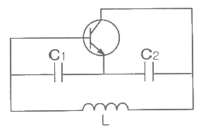
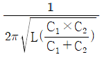
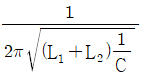
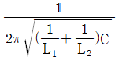
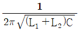
(정답률: 77%)
13. 아날로그 신호를 디지털 신호로 변화하는 과정을 순서대로 나타내면?
- 표본화→양자화→부호화
- 부호화→양자화→표본화
- 양자화→표본화→부호화
- 표본화→부호화→양자화
(정답률: 88%)
14. 펄스 변조방식 중 연속레벨 변조가 아닌 것은?
- PAM
- PCM
- PPM
- PWM
(정답률: 84%)
15. 다음 중 아래 RC 직렬 회로의 펄스 응답 특성에 대한 설명으로 틀린 것은?
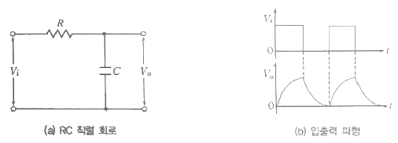
- 위 회로의 시상수는 RC[초]이다.
- 시상수가 클수록 출력 파형의 기울기가 크다.
- 시상수가 클수록 커패시터는 서서히 충·방전한다.
- 시상수가 작을수록 출력 파형이 안정된 값에 빨리 도달한다.
(정답률: 54%)
2과목: 전자계산기일반
16. 시분할 시스템(TSS: Time Sharing System)을 실현한 것은 몇 세대인가?
- 제 1세대
- 제 2세대
- 제 3세대
- 제 4세대
(정답률: 74%)
17. 다음 중 주소지정방식이 아닌 것은?
- 임시(Temporary) 주소방식
- 직접(Direct) 주소방식
- 간접(Indirect) 주소방식
- 임플라이드(Implied) 주소방식
(정답률: 86%)
18. 명령어의 연산자 코드가 4비트, 오퍼랜드(Opreand)가 5비트일 때, 이 명령어로 몇 가지 연산을 수행할 수 있는가?
- 4
- 16
- 20
- 32
(정답률: 64%)
19. 8진수 65를 16진수로 변환하면 얼마인가?
- (35)16
- (53)16
- (56)16
- (C5)16
(정답률: 79%)
20. 논리식
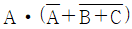
를 간략히 표현한 것은?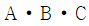
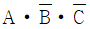
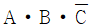
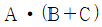
(정답률: 88%)
21. 4비트 2진수를 저장하려면 레지스터는 몇 개의 플립플롭으로 구성해야 하는가?
- 2개
- 4개
- 8개
- 16개
(정답률: 60%)
22. 다음 중 '컴퓨터 프로그램'의 정의로 옳은 것은?
- 컴퓨터 프로그램을 작성하는 일련의 과정
- 컴퓨터 프로그램을 작성하는데 사용되는 언어
- 컴퓨터 내에서 수행되는 일련의 과정을 처리하기 위한 명령문의 집합
- 컴퓨터 프로그램을 작성하는 사람
(정답률: 73%)
23. 2,048 바이트[byte]는 몇 킬로바이트[kbyte]인가?
- 1[kbyte]
- 2[kbyte]
- 3[kbyte]
- 4[kbyte]
(정답률: 87%)
24. 각종 언어처리 프로그램, 시스템 프로그램, 응용 프로그램, 사용자 작성 프로그램 등을 제어하는 프로그램은?
- 운영체제(Operating System)
- 유틸리티 프로그램
- 검사 시스템
- 응용 프로그램
(정답률: 87%)
25. 파워포인트의 주요 기능이 아닌 것은?
- 계산을 여러 가지 형태로 함수를 이용하여 수행할 수 있다.
- 프레젠테이션으로 적당하다.
- 멀티미디어 Animation 기능이 편리하다.
- 화면 슬라이드 기능이 있다.
(정답률: 93%)
26. 대역폭이 1.75[kHz]이고 신호전력이 62[W], 잡음전력이 2[W]일 때 채널용량은?
- 4,500[bps]
- 8,750[bps]
- 9,600[bps]
- 12,000[bps]
(정답률: 89%)
27. 다음 중 통신선로의 임피던스를 정합시키는 이유는?
- 송신기에 반사파를 최대로 공급하기 위하여
- 전압정재파비를 0으로 하기 위하여
- 반사계수를 1로 하기 위하여
- 반사파가 발생하지 않도록 하기 위하여
(정답률: 58%)
28. 첨단 인프라인 BcN을 무엇이라 하는가?
- 초고소정보통신망
- 광대역통합망
- 종합정보통신망
- 광가입자통신망
(정답률: 76%)
29. 전송선로의 단락 임피던스가 400[Ω]이고 개방 임피던스가 900[Ω] 이라면, 이 전송선로의 특성임피던스는?
- 600[Ω]
- 700[Ω]
- 800[Ω]
- 900[Ω]
(정답률: 73%)
30. 특정한 디지털 전송시스템에서 NRZ 방식의 전송 데이터율이 38.2[Mb/s]이다. 다른 조건이 같다면 RZ 방식의 전송 데이터율을 계산하면 얼마인가?
- 68.4[Mb/s]
- 38.2[Mb/s]
- 19.1[Mb/s]
- 5.488[Mb/s]
(정답률: 68%)
3과목: 통신선로일반
31. 다음 중 광섬유(Optical Fiber) 전송방식의 신호 변환과정으로 옳은 것은?
- 음성 – 전기펄스 – 광펄스 – 전기펄스 - 음성
- 음성 – PAM펄스 – PCM펄스 - 음성
- 음성 – PAM펄스 – PCM펄스 – PAM펄스 - 음성
- 음성 – 광펄스 – 전기펄스 – 광펄스 – 음성
(정답률: 78%)
32. 다음 중 펄스부호화의 장점이 아닌 것은?
- 잡음에 강하다.
- 논리회로 집적화에 강하다.
- 시분할다중화를 적용하여 분기와 삽입이 쉽다.
- 양자화잡음이 없다.
(정답률: 68%)
33. 다음 중 샤논의 정리에 근거하여 전송용량을 증가시키기 위한 방법으로 틀린 것은?
- 전송대역폭을 넓힌다.
- 신호의 크기를 높인다.
- 잡음의 크기를 줄인다.
- 신호대잡음비를 줄인다.
(정답률: 87%)
34. 케이블 선로의 시설 형식에 따른 분류가 아닌 것은?
- 가공 선로
- 지하 선로
- 수저 선로
- 시내 선로
(정답률: 74%)
35. UTP케이블에 대한 설명으로 틀린 것은?
- 케이블의 가격이 저렴하다.
- 절연된 구리선이 두가닥씩 서로 꼬아져 있다.
- 디지털과 아날로그 전송에 모두 사용될 수 있다.
- 외부잡음이나 간섭에 강하도록 알루미늄 호일로 차폐를 시킨 케이블이다.
(정답률: 77%)
36. 50/125[μm] 광섬유에서 코어 굴절률이 1.49이고 비굴절률(△)이 1.5[%]일 때, 최대 수광각은?
- 12.85도
- 14.96도
- 17.45도
- 28.34도
(정답률: 69%)
37. 광섬유 코어의 굴절률이 1.45이면, 광섬유에서 빛의 속도는 얼마인가?
- 2.069×108[m/s]
- 1.0345×108[m/s]
- 2.069×106[m/s]
- 3.0×108[m/s]
(정답률: 79%)
38. 다음 중 광 수신기의 잡음을 표현한 것으로 옳은 것은?
- 열잡음 + 산탄(Shot) 잡음
- 열잡음 + 백색(White) 잡음
- 산탄잡음 + 백색잡음
- 증폭기 잡음 + 백색잡음
(정답률: 71%)
39. 광통신에서 가장 구조가 간단하여 보편적으로 사용하는 광변복조 방식은?
- 강도변조 - 직접검파
- ASK – 헤테로다인검파
- FSK – 호모다인검파
- AM – 포락선검파
(정답률: 78%)
40. 국내 선로 시설 중 지역에 따라 사용할 수 있는 고정 배선법을 바르게 나타낸 것은?
- 단독 배선법과 인접 중복 배선법
- 단독 배선법과 중복 배선법
- 이중 배선법과 다중 배선법
- 이중 배선법과 혼합 배선법
(정답률: 82%)
41. 다음 중 내면이 매끈해서 케이블의 인입 포설 작업이 가장 용이한 관은?
- 흄관
- 경질 PVC관
- 콘크리트관
- 철관 및 강관
(정답률: 88%)
42. xDSL의 종류별 특징으로 틀린 것은?
- ADSL : 비대칭형이며 전화선을 사용한다.
- SDSL : 비대칭형이며 전화선을 사용한다.
- VDSL : 전송거리가 짧으며 백본랜 등에 활용한다.
- HDSL : 대칭형이며 4선식 회선으로 구성되어 있다.
(정답률: 80%)
43. 다음 그림은 케이블의 무엇을 측정하기 위한 구성인가?
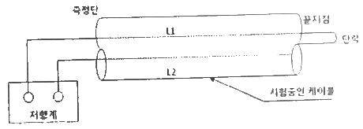
- 절연저항의 측정
- 루프저항의 측정
- 접지저항의 측정
- 차폐율 측정
(정답률: 68%)
44. 다음 중 광선로 상태 감시를 하는 OTDR의 기능이 아닌 것은?
- 광섬유 단선지점 표시
- 광커넥터 및 광 융착접속 지점 표시
- 광섬유 총 거리측정
- 광섬유 편광특성 측정
(정답률: 67%)
45. 광섬유 케이블에서 입력측의 전력이 0.1[mW], 출력측의 전력이 0.001[mW]일 경우 케이블의 전송손실[dB]은?
- 10[dB]
- 20[dB]
- 30[dB]
- 100[dB]
(정답률: 55%)
4과목: 선로설비기준
46. 다음 용어의 정의에 해당하는 것은?
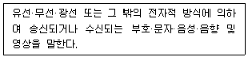
- 방송통신
- 방송통신설비
- 방송통신콘텐츠
- 방송통신서비스
(정답률: 77%)
47. 다음 중 정보통신공사의 범위에 들지 않는 것은?
- 전기통신관계법령 및 전파관계법령에 따른 통신설비공사
- 방송법 등 방송관계법령에 의한 방송설비공사
- 정보통신관계법령에 따라 정보통신설비를 이용하여 정보를 제어·저장 및 처리하는 정보설비공사
- 수전설비를 포함한 정보통신전용 전기시설설비공사 등 기타 설비공사
(정답률: 80%)
48. 감리원의 배치기준 중 100억 이상의 공사에 배치할 수 있는 자는?
- 기술사
- 특급감리원
- 고급감리원
- 중급감리원
(정답률: 79%)
49. 정보통신공사업자는 상호, 명칭 또는 그 밖에 대통령령이 정하는 사항을 변경한 경우네는 대통령령으로 정하는 바에 따라 이를 시·도지사에게 신고하여야 한다. 다음 중 공사업의 폐업을 신고하여야 하는 사항이 아닌 것은?
- 공사업자가 파산한 경우에는 그 파산관계인
- 법인이 합병 또는 파산 외의 사유로 해산한 경우에는 그 청산인
- 공사업자가 사망하였으나 상속인이 그 공사업을 상속하지 아니하는 경우에는 그 상속인
- 영업정지처분에 위반하거나 최근 5년간 3회 이상 영업정지처분을 받은 때
(정답률: 73%)
50. 정보통신공사협회는 누구의 인가를 받아 설립할 수 있는가?
- 대통령
- 국무총리
- 특별자치도지사
- 과학기술정보통신부장관
(정답률: 97%)
51. 전기통신을 하기 위한 선로·기계·기구 또는 그 밖에 전기통신에 필요한 설비를 무엇이라 하는가?
- 전자통신설비
- 정보통신설비
- 전기통신설비
- 전파통신설비
(정답률: 89%)
52. 기간통신사업자가 전기통신서비스 요금 감면 대상이 아닌 것은?
- 시중은행
- 재난구조
- 사회복지
- 국가안전보장
(정답률: 90%)
53. 맨홀 또는 핸드홀 간의 설치기준에 맞는 것은? (단, 교량·터널 등 특수구간의 경우와 광케이블 등 특수한 통신케이블만 수용하는 경우는 제외)
- 236[m] 이내
- 246[m] 이내
- 256[m] 이내
- 264[m] 이내
(정답률: 80%)
54. 다음은 무엇에 대한 용어의 정의인가?
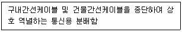
- 국선단자함
- 동단자함
- 층단자함
- 세대단자함
(정답률: 70%)
55. 특별히 위해방지설비를 하지 않은 상태에서의 해저통신선은 해저 강전류전선으로부터 몇 미터 이내의 거리에 접근하여 설치할 수 없는가?
- 500[m]
- 550[m]
- 600[m]
- 650[m]
(정답률: 91%)
56. 다음 중 골조공사시 세대단자함의 재질 및 보강방법 등을 고려하여 설치하는 주된 이유는?
- 변형이 생기지 않도록 하기 위하여
- 세대 간의 층간소음을 줄이기 위하여
- 예비전원을 쉽게 가설하기 위하여
- 단지서버를 쉽게 설치하기 위하여
(정답률: 80%)
57. 다음 괄호 안에 들어갈 용어로 맞게 짝지어진 것은?
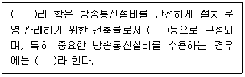
- 방송사 – 방송기계실 - 중요방송사
- 방송실 – 통신실 - 핵심방송실
- 통신국사 – 통신기계실 - 중요통신국사
- 통신실 – 방송실 – 핵심통신실
(정답률: 95%)
58. 다음 중 방송통신설비에 대한 용어의 정의가 잘못된 것은?
- 옥외설비 : 중계케이블이나 안테나 설비 등 옥외에 설치되는 통신설비
- 통신기계실 : 교환설비나 전송설비, 전산설비 등이 설치되는 장소
- 중요데이터 : 시스템 데이터나 국 데이터 등 해당 데이터의 파괴, 소실 등으로 통신망 기능에 중대한 지장을 주는 데이터
- 응답스펙트럼 : 방송통신설비가 가지고 있는 고유 진동에 대한 주파수 응답 특성
(정답률: 64%)
59. 다음 중 '방송통신설비의 안전성 및 신뢰성 등에 관한 기술기준'에서 정의하는 사업용 방송통신설비가 아닌 것은?
- 독립통신설비
- 기간통신설비
- 전송망설비
- 부가통신설비
(정답률: 65%)
60. 다음 중 방송통신 옥외설비의 안정성을 확보하기 위하여 요구되는 대책이 아닌 것은?
- 풍해대책
- 동결대책
- 낙뢰대책
- 자외선대책
(정답률: 88%)